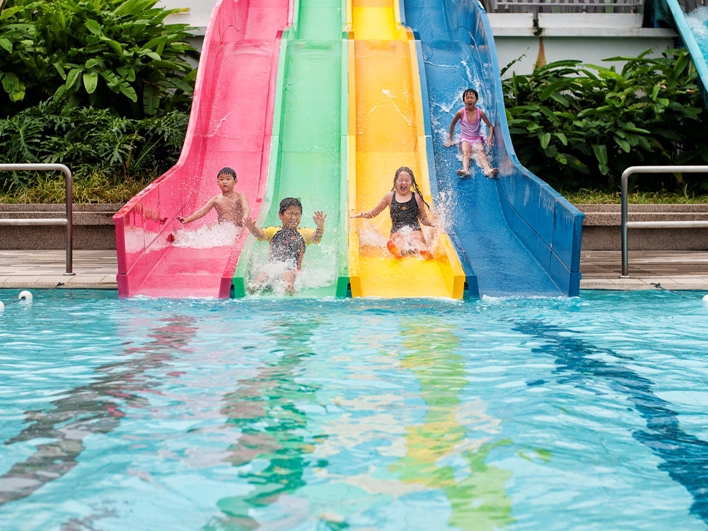

Sengkang Swimming Complex, also known as Anchorvale Swimming Complex, is a wonderful recreation centre that is located beside Sengkang Riverside Park. It offers swimming fun for the entire family, with 5 swimming pools and 8 water slides.
The 2 teaching pools here make Sengkang Swimming Complex ideal for children and adults to learn swimming. Group swimming classes are conducted here throughout the week by our friendly swimming instructors. They are experienced in teaching students of all stages, from beginner swimming lessons for kids and adults, right up to experienced swimmers.
Operating Hours: Tue-Sun 8am-9.30pm
Morning Swim: Competition Pool opens 6.30am on Tuesdays
Weekly Maintenance: Monday - Full Day
Address: 57 Anchorvale Road, Singapore 544964
Adult Singapore Citizen/PR - Weekdays: $1.50
Adult Singapore Citizen/PR - Weekends: $2
Child/Senior - Weekdays: $0.80
Child/Senior - Weekends: $1
Standard Rate - Weekdays: $2
Standard Rate - Weekends: $2